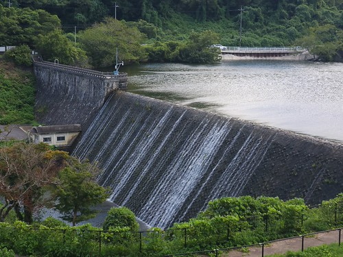
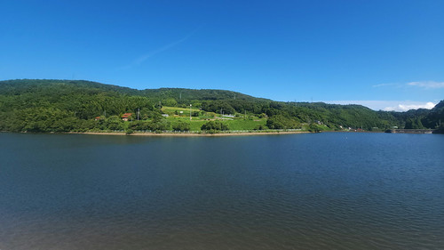
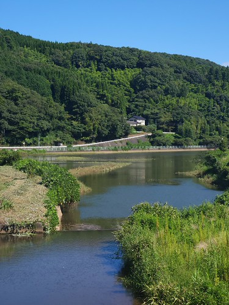
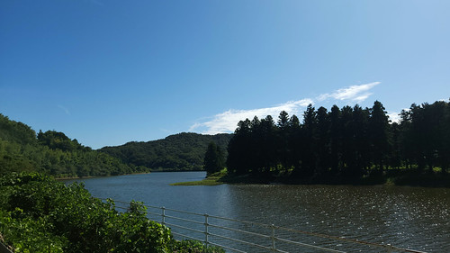
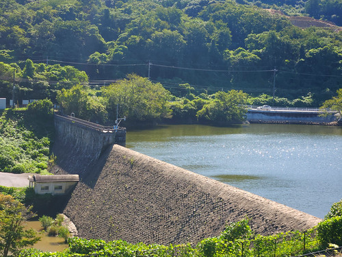
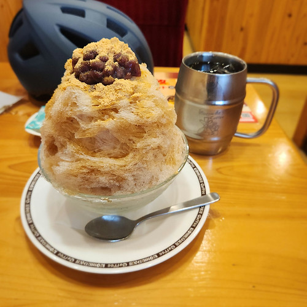
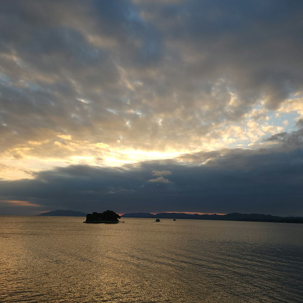
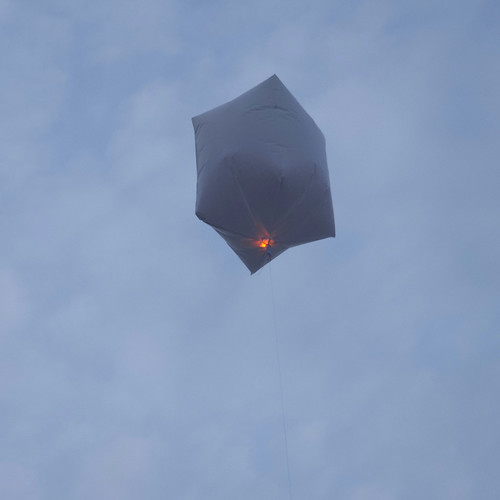
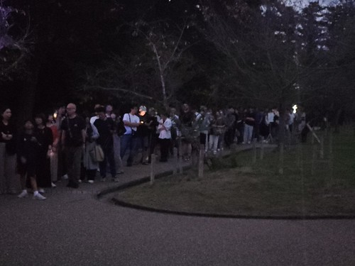
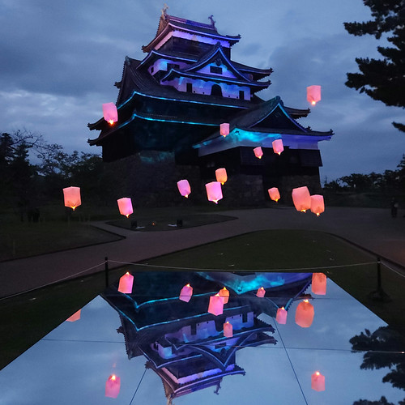

お散歩カメラ 2026-09-12

ありゃ。 前回の記事から1ヶ月半くらい経ってるな。 今年の夏も割と走り回った。 昨年ほどのペースではないが，7月に自転車を再開してからトータルで700km以上（サイコンで計測したもののみ）走っている。 上手くすれば年内に2,000kmは行けるかもしれない。
千本ダム一周
千本ダム（千本
大正時代に建設された水源地堰堤。堤体内部は粗石コンクリートを用い、表面は間知石の谷積。2003年に日本土木学会選奨土木遺産に指定され、2008年には登録有形文化財に登録された。
千本ダムは2003年に日本土木学会選奨土木遺産に指定されている。 以下が選奨理由だそうだ。
大正7年に竣工した山陰初の近代水道施設であり、外観は御影石で覆われた重厚な雄姿を持ち、今も活用されているもの
実際に今でも松江市の上水道の 1/4 を賄っているらしい。 なお，千本ダムは2020年に耐震補強工事が行われている（これで外観が損なわれてないのが凄いよねぇ）。
千本ダムは満水時の景色がいい。 以下は 2026-09-05 に撮ったやつ。

最近，ここまでは自転車で割と行くのよ。 リハビリに丁度いい負荷だし。
まだ筋力も体力（＝持久力）も心許ないので宍道湖一周は流石に無理だが，千本ダム一周なら行けんじゃね？ というわけでコースをチェックしてみる。
千本ダム一周より
1箇所だけ9%勾配の登りがあるが，ごく短い距離なので大丈夫だろう。 行けそうだな。 行ってみよう。

東側の松江木次線からの眺め。 天気がよくてよかったねぇ。 試しに 16:9 でトリミングしてみた。 いかがだろうか。

忌部川から千本ダムへ水が流れ込むところ。 写真ではよくわからないかもしれないが，手前のほうに小さな砂防ダムがある。

ダムの西側に回り込んだところ。 この辺だと川か湖か分からんなぁ（笑）

ぐるっと回って帰ってきた。 雨が降った直後でもなければ堰から水が溢れるところは見れない。 まぁ貯水率は80%以上あるみたいなので，無問題。
水鏡 松江城
2026-09-11 から「水鏡 松江城」なるイベントが始まっていると聞いたので，行ってみることにした。
週末の県立図書館は17時で閉まってしまうので，時間まで喫茶店で和む。

この日は千本ダム以外にもあちこち走り回って，その度にクールダウンで甘味を食べている。 今年のお気に入りは，写真にもある，コメダの「黒蜜きなこのぜんざい氷」である。 トッピングなしで，これでミニサイズ。 きなことかき氷が合うとは思わなかった。
いい時間になったので移動。 途中，宍道湖沿いを走ってたら，すンごい人でびっくりした。 いや，西側は曇っとるやろがい。

本丸まで登ると何か沢山浮かんでる。

一瞬「孔明灯か？」と思ったが，バルーンを（孔明灯風に）紙で覆って下側に LED ライトを仕込んでいるのかな。 どうやら「水鏡 松江城」は，地面に大きな鏡を敷いて，舞台（？）の上から眺める趣向のようだ。
完全に日が暮れて，舞台へ向かう大行列に混じる。

舞台からの眺めはこんな感じだった。

あまりに人が多く，撮影タイムも殆ど取れなかった。 スマホの広角カメラ（35mm版一眼レフで24mm相当）で撮ったのだが，まぁこんなもんだろう。 50mm〜80mm相当のレンズで舞台の下から撮ったら面白いかな，とも思ったが，人が多すぎて試せなかった。
これなら1回見たらもういいかな（笑） 面白かった，ではあるか。
ブックマーク
参考

- 【MV】ボクラノヨル / 倉持めると
- ボクラノヨルだ☾⋆⁺ Lyrics & Music : SAKURAmoti 様☾⋆⁺ Recording engineer : 田中雄司 様☾⋆⁺ Bass : へくぼき 様☾⋆⁺ Mixing Engineer : はるっと様☾⋆⁺ Illust : ｽｷﾞﾓﾄ 様☾⋆⁺ Animation : 南海 様☾⋆...
- 評価
[Comment] 移動しながら聞くとご機嫌になれる曲。ケイデンス80くらいでちょうどテンポが合うんだよなぁ。「うかつに突き進んで行け！」の歌詞でシビレた
Powered by linkcard

- きらめき DRIVE / 輪堂千速 (official)
- 走れエンジン全開！Let's GO!提供：首都高バトルVOCAL：輪堂千速 from FLOW GLOW■『首都高バトル』Steam®ストアページ https://store.steampowered.com/app/2634950/■PlayStationTM Store URL https://store...
- 評価
[Comment] ゲーム「首都高バトル」と VTuber 輪堂千速とのコラボ曲。レースゲームっぽく疾走感があって，聞いてて楽しい。
Powered by linkcard

- 音乃瀬奏 - You＆合図 (Official MV)
- 音乃瀬奏 2ndオリジナル曲「You＆合図」4/20(月) 24：00（4/21 0：00）リリース開始！https://cover.lnk.to/4RIBglVocal：Otonose KanadeLyrics, Music & Arrangement ： TAKMixing Engineer：Hirofum...
- 評価
[Comment] ひたすら可愛い曲。煽らない月曜日（笑）
Powered by linkcard